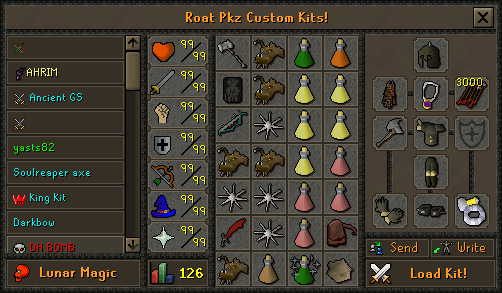

FIRST-HOUR PLAYER ROUTE
Roat Pkz Starter Guide: Commands, Kits and Progression
Secure your account, learn item spawning, build reusable combat kits and choose a practical PvP, PvM or skilling route without risking upgrades you cannot replace.
Core principle: Roat Pkz is a spawn server, but valuable progression items and currencies still need to be earned, traded or obtained through activities.
QUICK ANSWER
How do you get started in Roat Pkz?
Download the official client, create an in-game account with a unique password, attach an email using ::setemail, visit Home and Shops, test item lookup and spawning, then save a fully replaceable Custom Kit. Use ::funpk for a no-item-loss combat test before entering the Wilderness. PKP is the main general-purpose currency, but valuable non-spawnable items and other currencies still drive progression.
START IN THE RIGHT ORDER
Your first 10 minutes
- Use the official client.Download it from the official Roat Pkz website, not a rehosted client.
- Create the in-game login.Forum and game credentials are separate. An “incorrect password” on a new name can mean that name is already registered.
- Use a unique password.Do not reuse the password from another server, forum or email account.
- Attach an email.Run
::setemailbefore building value on the account. - Read the current rules.Open them with
::rulesand note the bans on automation and PKP farming. - Orient yourself at Home.Use
::homeand identify the bank, service areas and nearby portals. - Inspect the main shops.Use
::shopsand separate spawnable supplies from currency-priced upgrades. - Find a common item ID.Try
::getid Item_namewith an ordinary item. - Test spawning.Use
::item Item_id item_amountor::pickup Item_idwith something low value. - Build a replaceable kit.Open
::kitsand save a basic equipment and inventory setup. - Check the vote interface.Use
::vote, read the live reward and claim only after completing the listed sites. - Choose a safe first activity.Practise in
::funpk, visit a known safe service area or train at a verified skilling teleport.
PROTECT THE ACCOUNT FIRST
Account security and recovery
::setemail
Attach an email to protect the account and support recovery. The official FAQ says Roat Pkz does not use bank PINs, so email setup is the documented protection step.
::changepassword
Change the in-game password. Use a unique phrase and never share it with another player.
::recover
Open the documented recovery route when the account already has recoverable information.
::manualrecovery
Open the manual recovery route when the normal flow is not enough.
UNDERSTAND THE ECONOMY
Spawnable items, non-spawnables and PKP
Reusable baseline gear
Many standard combat items and supplies can be created from an item ID. Use these to learn setups and build replacement kits.
Progression items
Some equipment must come from shops, drops, activities, player trades or Trading Post listings. A valid ID does not make an item spawnable.
PK Points
PKP is the broad trading and shop currency. Other currencies are tied to their own activities and shops, so do not treat every point type as interchangeable.
Verified conflict: official Wiki pages currently disagree about the ordinary PKP reward per PvP kill. This guide therefore avoids a fixed base payout. Check the live game before calculating a route.
ITEM-SPAWNING TUTORIAL
Find, spawn and restock items
- 1
Search by item name
Enter
::getid Item_name, replacing the placeholder with the item you want. Use a clear full or partial name. - 2
Read the returned item ID
Check that the result matches the intended item and variant.
::itemlistopens the documented external ID list if the in-game search is unclear. - 3
Spawn a permitted item
Use
::item Item_id item_amount. For one item, the Commands page also documents::pickup Item_id. - 4
Use supply shortcuts
Verified shortcuts include
::food,::runes,::anglers,::veng,::barrageand::tb. - 5
Recognize a non-spawnable
If the command rejects an item, stop retrying. Check
::shops,::tp, drop tables or the relevant activity instead.
SEARCHABLE REFERENCE
Essential Roat Pkz command directory
The table remains fully available without JavaScript. Search and category filtering are optional enhancements for quickly finding a verified beginner command.
Showing all commands
| Command | Category | Purpose | Safety | Beginner use |
|---|---|---|---|---|
::setemail | Security | Attach a recovery email. | Account | Run during the first login. |
::changepassword | Security | Change the in-game password. | Account | Use after any security concern. |
::recover | Security | Open the recovery page. | Account | Use for normal recovery. |
::manualrecovery | Security | Open manual recovery. | Account | Use if standard recovery is insufficient. |
::home | Navigation | Return to the Home base. | Safe service | Banking and orientation. |
::shops | Navigation / Trading | Travel to the main shop area. | Safe service | Compare shop currencies and stock. |
::tp | Navigation / Trading | Open or travel to the Trading Post. | Safe service | Compare several player listings. |
::funpk | Navigation / PvP | Enter no-item-loss PK practice. | No item loss | Test a first combat kit. |
::riskzone | Navigation / PvP | Enter the high-risk PK zone. | Lose equipped items | Avoid until replacements are affordable. |
::getid Item_name | Items and supplies | Find an item ID by name. | Utility | First step in the spawn workflow. |
::item Item_id item_amount | Items and supplies | Spawn a permitted item and quantity. | Verify item | Create common gear or supplies. |
::pickup Item_id | Items and supplies | Spawn a permitted item by ID. | Verify item | Quick single-item alternative. |
::food | Items and supplies | Spawn food. | Utility | Restock a replaceable kit. |
::runes | Items and supplies | Spawn all runes. | Utility | Restock magic supplies. |
::anglers | Items and supplies | Spawn Anglerfish from the bank. | Utility | Prepare a combat inventory. |
::veng / ::barrage / ::tb | Items and supplies | Spawn spell-specific rune sets. | Utility | Restock a chosen PvP style. |
::kits | Information | Open premade and Custom Kits. | Utility | Save and reload repeatable setups. |
::drops / ::droptable | Information / PvM | View monster drops and rates. | Information | Check a target before buying gear. |
::prices | Information / Trading | View item-price information. | Estimate | Cross-check with multiple listings. |
::itemlist | Information / Items | Open the documented item-ID list. | Information | Use when name search is unclear. |
::vote | Information | Open the vote interface. | Activity | Read the live bonus before a session. |
::rules | Information | Open the current game rules. | Information | Read before PvP, trading or skilling. |
::tasks | Information | Travel to the Daily Task Master. | Activity | Review the daily assignment set. |
::myrisk | PvP / Information | Display the current carried risk. | Risk check | Check before a dangerous teleport. |
::blacklist | PvP / Information | View the PvP blacklist. | Information | Use when learning PvP protections. |
::skull / ::unskull | PvP / Convenience | Add or remove a PK skull. | Changes risk | Confirm protected items first. |
::locs | PvM / Information | View boss locations. | Check destination | Research the area before teleporting. |
::skilling | Skilling / Navigation | Travel to the skilling island. | Safe service | Inspect manual training options. |
::mining / ::fishing / ::woodcutting | Skilling / Navigation | Travel to documented skill areas. | Check arrival | Start an activity-specific route. |
::repair | Convenience | Travel to Barrows repair services. | Safe service | Restore degraded equipment. |
::decant | Convenience | Travel to potion decanting. | Safe service | Organize potion doses. |
::vialsmash | Convenience | Toggle empty-vial smashing. | Preference | Reduce inventory cleanup. |
::renderself | Convenience | Hide or show your character. | Preference | Improve visibility in crowded areas. |
No commands match that search and category. Clear the search or choose All categories.
REUSABLE LOADOUTS
Build and load Custom Kits
- Open the interface. Type
::kitsor use the kit tabs beside the emotes tab. - Select a premade or saved kit. The list identifies each setup by name.
- Inspect the preview. Confirm equipment, inventory, runes, food and risk before loading.
- Create your own setup. Use the custom-kit tab, arrange the desired loadout, give it a clear name and save it.
- Load the kit. Select the setup and choose Load Kit. Recheck non-spawnables before a dangerous teleport.

Safe practice kit
Spawnable gear, standard food and no rare upgrades. Use it to learn switches and inventory order in FunPK.
Budget Wilderness kit
A loadout you can replace several times without draining the bank. Keep the risk total visible.
PvM kit
Match the verified target’s attack styles and supplies. Check the route and death conditions before adding value.
Utility kit
Keep skilling or task supplies separate from combat gear so a quick teleport does not carry accidental risk.
BUY WITH CONTEXT
Shops, currencies and the Trading Post
Fixed interfaces and currencies
::shops leads to the main Home shop area. PKP, Vote, Donator and Bounty Hunter shops use their relevant currencies; activity shops can be located elsewhere.
Advertisements, not completed prices
Use ::tp or a bank to inspect Trading Post offers. Listings show seller, quantity, asking price and age, then buyers contact the seller in person.
- Compare more than one listing and use
::pricesas another reference point. - Keep enough liquid PKP for replacement supplies and fees before buying an upgrade.
- Check whether an item is spawnable before paying another player for it.
- Never treat the highest visible listing as the item’s confirmed market value.
TIME YOUR BONUS
Vote before a focused session
Open
Use ::vote to open the current in-game interface.
Complete
Follow every available site shown in the live interface.
Claim and use
Claim in game, then use the temporary bonus during a planned activity.
The current official Voting page documents a one-hour monster drop-rate boost and an additional PvP reward. Its points-per-site field is unresolved, so this guide does not publish a fixed vote-point amount. Read the live interface before choosing a reward or schedule.
DAILY STRUCTURE
Use daily tasks as a route selector
Visit the Task Master with ::tasks or review the task interface through the Quest tab. The official page documents six assignments at 00:00 server time: two Easy, two Medium and two Hard entries, with the final entry representing completion of the other five.
Difficulty mix
Most assignments are PvP-related and one is PvM. Read every destination and risk condition before accepting the route.
Skips
The documented daily skip allowance ranges from one to five tasks based on Donator rank. Check the interface before spending a skip.
Voting bonus
The page documents 20% more Daily Task Points for 12 hours after voting once. Confirm the active bonus in game.
Rewards and streaks
Daily Task Points buy temporary scrolls. Completing the full set advances a streak; missing a day can reset it without streak protection.
Daily tasks can add structure, but they are not automatically the best money-making route. Compare time, risk and net PKP in the Roat Pkz money-making guide.
CHOOSE A ROUTE YOU CAN REPEAT
PvP, PvM and skilling progression
PVP ROUTE
Practise, price, then risk
- Learn the kit in
::funpk. - Build a budget Wilderness version.
- Check
::myriskand protected items. - Track wins, deaths and replacement cost.
PVM ROUTE
Research before upgrading
- Use
::dropsor::droptable. - Choose a documented target you can sustain.
- Check whether travel crosses the Wilderness.
- Vote before a focused drop session if useful.
SKILLING & TASKS
Build steady activity value
- Use a verified skill teleport.
- Check whether the area is safe on arrival.
- Train manually and answer anti-bot checks.
- Combine tasks, points and tradeable rewards.
There is no universal best starter route. Choose the path whose requirements, attention level and potential losses you can repeat for several sessions.
BANK BUILDING
Build the first bank around repeatability
Record starting PKP and the value of any non-spawnable supplies.
Choose a route you can complete without relying on a rare drop.
Include fees, consumables, deaths and unsold items.
Keep multiple replacement sets before purchasing a marginal upgrade.
Do not value a session from one optimistic Trading Post listing or one rare drop. Track net PKP across several sessions and compare routes in the Roat Pkz money-making guide .
CHECK BEFORE YOU TELEPORT
Safe practice, safe services and dangerous routes
FunPK practice
The official Commands page describes ::funpk as PK without losing items. Use it to test a new kit and inventory order.
Home, Shops and Trading Post
::home, ::shops and the Trading Post are service destinations. Still check what you carry before leaving them.
Bosses and open-world routes
::revs, ::easts, ::wests and many boss commands lead to Wilderness locations where players can attack you.
Riskzone
The official command description says everything equipped is lost on death at ::riskzone. Treat this as a separate risk mode.
AVOID EXPENSIVE ERRORS
Common starter mistakes
- Delaying security: building value before setting an email and unique password.
- Confusing ID with availability: assuming every valid item ID is spawnable.
- Using the wrong syntax: omitting the item ID or amount from
::item. - Buying before checking: paying for an item that could have been spawned.
- Ignoring Custom Kits: rebuilding inventories manually and making avoidable setup errors.
- Blind teleporting: entering a Wilderness, multi-combat or high-risk area with valuables.
- Spending the whole bank: buying one upgrade without keeping replacement sets and supplies.
- Trusting one listing: treating a single Trading Post asking price as a completed market price.
- Skipping free structure: ignoring current voting bonuses and daily tasks when they fit the route.
- Farming kills: boosting PKP, arranging guaranteed targets or abusing alternate accounts.
- Automating play: using bots, macros, AHK or cheat clients, all prohibited by the official rules.
FIRST-HOUR CHECKLIST
Leave the first session with a working account plan
- Official client downloaded and working.
- Unique in-game password created.
- Email attached with
::setemail. - Current rules opened and read.
- Home, Shops and Trading Post located.
- One common item ID found successfully.
- One permitted item and supply set spawned.
- A fully replaceable Custom Kit saved.
- The kit tested in no-item-loss FunPK.
- Current vote reward checked and claimed if useful.
- One PvP, PvM or skilling route selected.
- Starting PKP, risk budget and replacement cost recorded.
FAQ
Roat Pkz starter questions
Is Roat Pkz a spawn server?
Yes. The official starter guide identifies Roat Pkz as a spawn server. Many standard items can be created quickly, while valuable non-spawnable items, drops and currencies still provide progression goals.
What is the main currency in Roat Pkz?
PK Points, usually shortened to PKP, are the main general-purpose currency for player trading, the Trading Post and most shops. Other activity-specific currencies also exist.
How do I secure a new Roat Pkz account?
Use a unique password, attach an email with ::setemail and use ::changepassword when needed. The official command directory also lists ::recover and ::manualrecovery for account recovery.
How do I find an item ID in Roat Pkz?
Use ::getid Item_name to look up an item by name. The official commands page also lists ::itemlist as a link to the server's item-ID list.
How do I spawn an item in Roat Pkz?
For a spawnable item, use ::item Item_id item_amount or ::pickup Item_id. A valid item ID does not guarantee that the item is spawnable.
Why can I not spawn some Roat Pkz items?
Some items are intentionally non-spawnable. Buy them from a shop or player, use the Trading Post, earn them from an activity or obtain them as a drop.
How do I open Custom Kits in Roat Pkz?
Type ::kits to open the Custom Kits interface. The official starter guide also says kit tabs are available beside the emotes tab.
How do I access the Trading Post?
Use ::tp or access the Trading Post from a bank. It displays player advertisements, so compare several listings and remember that an asking price is not proof of a completed sale.
How do I vote in Roat Pkz?
Use ::vote, complete the available vote links and claim through the live interface. Verify the current reward before planning around it because vote values can change.
What is the safest first activity in Roat Pkz?
Secure the account, test spawning with a common item, build a fully replaceable kit and practise combat in ::funpk, which the official commands page describes as no item loss.
Which Roat Pkz teleports are dangerous?
The official commands page lists Wilderness destinations separately, including ::revs, ::easts, ::wests and wilderness-boss routes. It also states that everything equipped is lost on death in ::riskzone. Read every live warning before teleporting.
Are bots, macros or AHK allowed in Roat Pkz?
No. The official rules prohibit cheat clients, bots, macros, AHK scripts and other third-party tools that provide an unfair advantage in PvP, PvM or skilling.
Official sources, verification and disclaimer
Official Roat Pkz Wiki sources used: Starter guide, Commands, FAQ, Currencies, PK Points, Shops, Trading Post, Voting, Daily tasks, Boss directory and Rules.
Commands, rewards, interfaces and danger rules may change. This independent guide is not affiliated with or endorsed by Roat Pkz.